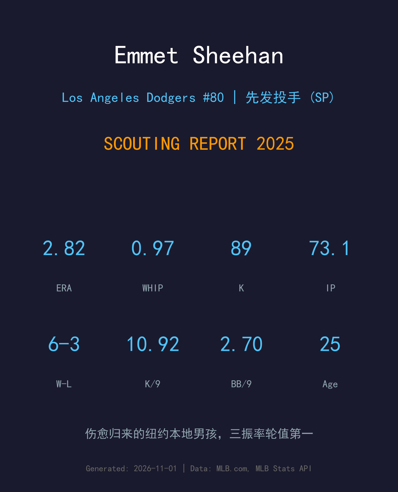
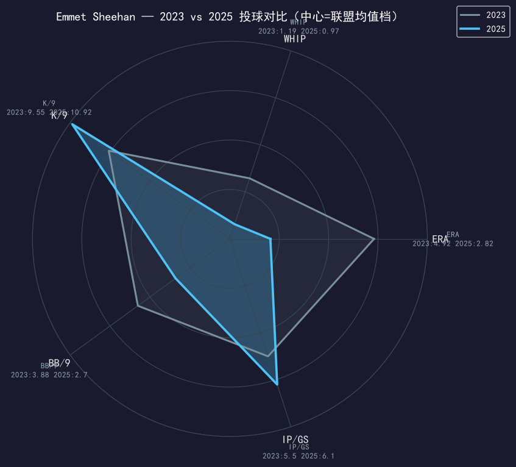
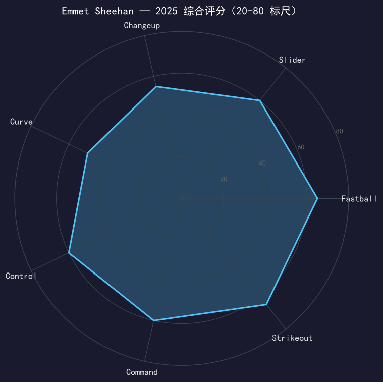

Los Angeles Dodgers #80 | 先发投手 | 右投 | 伤愈归来的纽约本地男孩，三振率轮值第一

Emmet Sheehan 在 2025 年完成了道奇球迷等待了两年的回归：手肘手术缺席整个 2024 赛季后，他带着 2.82 自责分率、0.97 WHIP、10.92 K/9 的成绩单回到轮值——三振率全队先发第一，甚至比伤前更凶猛。
15 场出赛（12 场先发）、6 胜 3 负、73.1 局。局数仍然受限（球队对他的手臂保持谨慎的逐步松绑），但每一局的质量都堪称精英：场均仅 5.4 支安打、BB/9 2.70 生涯最佳、HR/9 0.86 稳健。6 尺 5 寸的出手点配上 95.6 mph 的四缝线，他的速球依然是打者眼中的噩梦。
唯一的隐忧在季后赛：教练组把他移出轮值改任长中继，结果 12 场出赛仅 7.1 局、自责分率 8.65——小样本的灾难数据。如何解读这组数字，将直接决定他 2026 年在牛棚还是轮值开始新赛季。
2023 年 6 月 16 日首秀，菜鸟赛季 60.1 局 64 次三振、4 胜 1 负——一度成为道奇轮值的惊喜发现，直到手肘伤势在下半年找上门。
2.82 ERA / 0.97 WHIP / 10.92 K/9，三项核心数据全部优于伤前；12 场先发 6 胜 3 负，是道奇轮值效率最高的投手之一。
随队完成从外卡到世界大赛的全程夺冠，尽管季后赛角色转为长中继，冠军戒指是他复出路上的重要一站。

| 赛季 | G | GS | W-L | ERA | WHIP | IP | SO | BB | K/9 |
|---|---|---|---|---|---|---|---|---|---|
| 2023（菜鸟年） | 13 | 11 | 4-1 | 4.92 | 1.19 | 60.1 | 64 | 26 | 9.55 |
| 2025（回归年） | 15 | 12 | 6-3 | 2.82 | 0.97 | 73.1 | 89 | 22 | 10.92 |
与 May 的回归曲线相反，Sheehan 归来后「全方面升级」：ERA 从 4.92 砍到 2.82、WHIP 从 1.19 降到 0.97、BB/9 从 3.88 优化到 2.70，唯一「退化」的被全垒打数反而更少（11→7）。手术似乎帮他重建了更干净的出手机制——60.1 局 64K 的菜鸟已经是惊喜，73.1 局 89K 的回归版则有了轮值前段的轮廓。
2025 赛季真实配球数据（MLB Stats API pitchArsenal）：
6-5 身高的俯视出手让 95+ mph 的速球压迫感十足，上旋效率出色，是他抢好球数与两好球后追杀的绝对基石。
88 mph 档的硬滑球，与速球形成 8 mph 速差，横向位移足以让打者打到球棒柄部，是他三振率突破 10 的关键。
对付左打者的第三武器，近 10 mph 的速差与仿速球出手动作，是他能否长期站稳轮值的隐藏胜负手。
慢速曲球作为配球点缀，改变打者视线高度用；占比不高，但让打者无法只准备速球与滑球。
Sheehan 的 2025 是「少而精」的典范：73.1 局的数据样本里，ERA、WHIP、K/9、BB/9、HR/9 五项指标全部优于联盟平均，且四项优于自己伤前。被打击率仅 .196（49/250），意味着打者一整季都很难连续摸到他。对经历手肘重建的投手来说，这种「归来即升级」的案例并不多见—— usually 需要一年找感觉，他跳过了这一步。
16.7% 的变速球占比是他与 May 回归故事的最大差异：这颗球让左打者无法舒服地等速球内角，也让他的武器库第一次有了「前段先发」的完整轮廓。如果变速球的使用频率与 confidence 在 2026 年继续提升，他的上限将从「轮值第 4 号」直接跳到「第 2-3 号」。
8.65 的季后赛 ERA 看着刺眼，但请拆开看：12 场出赛只有 7.1 局，全部是比分拉开后的长中继/垃圾时间，7 分自责分里有多次是连续安打而非重击。样本太小，不足以否定常规赛 15 场的精英数据；但教练组的「不敢在季后赛让他先发」是真实的信任信号——2026 年春训，他必须重新赢得关键局的信任。

归来即升级的轮值潜力股
B+ 级 / 轮值中段
道奇 2025 季后赛夺冠之路：外卡 2-0 红人 → NLDS 3-1 费城人 → NLCS 4-0 酿酒人 → 世界大赛 4-3 多伦多蓝鸟。
| G | GS | IP | ERA | WHIP | SO | BB |
|---|---|---|---|---|---|---|
| 12 | 0 | 7.1 | 8.65 | 2.45 | 6 | 5 |
Emmet Sheehan 的 2026 年有一个简单的前提：健康。如果手臂继续以 2025 年的轨迹前进，他将毫无悬念地回到轮值，并有机会冲击 140-160 局的生涯新高。道奇对他的使用策略会继续保守（跳过部分轮值、严格控制球数），这既保护他，也延缓他兑现完整上限的速度。
理想剧本：局数解锁到 150+，进入轮值前 3 讨论
现实基准：轮值第 4-5 号，130 局左右，K/9 维持 10+
关键变量：变速球能否成为对付左打者的稳定武器
Emmet Sheehan 出生于纽约市，在曼哈顿的钢筋森林里爱上了棒球。2019 年选秀第三轮，道奇把这个 6-5 的纽约右投带回西海岸——在他家乡球队的注视下，他走的是一条低调而扎实的路。
2023 年 6 月 16 日，他完成大联盟首秀，菜鸟赛季就展现了超越年龄的三振能力。然而命运在下半年给了他第一记重拳：手肘伤势最终演变成需要手术的程度，整个 2024 赛季报销。对一个刚在轮值站稳脚跟的年轻人来说，这几乎是最坏的时间点。
2025 年，他回来了。2.82 自责分率、0.97 WHIP、每九局近 11 次三振——他用一个赛季的精英数据告诉所有人：缺席的一年没有偷走任何东西，反而让他学会了如何更聪明地投球。世界大赛冠军戒指是故事的注脚，而不是终点。